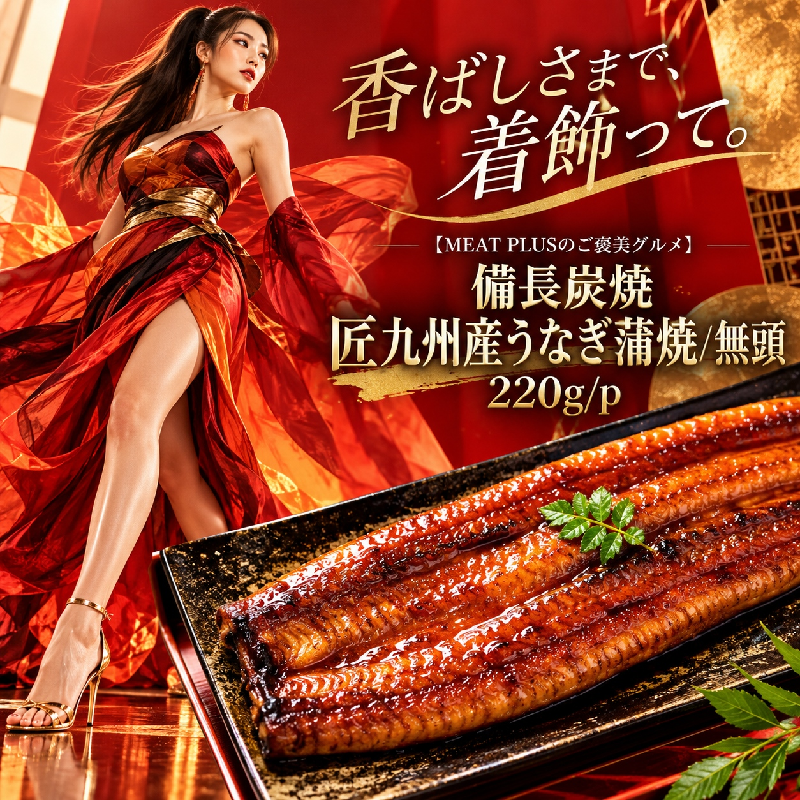
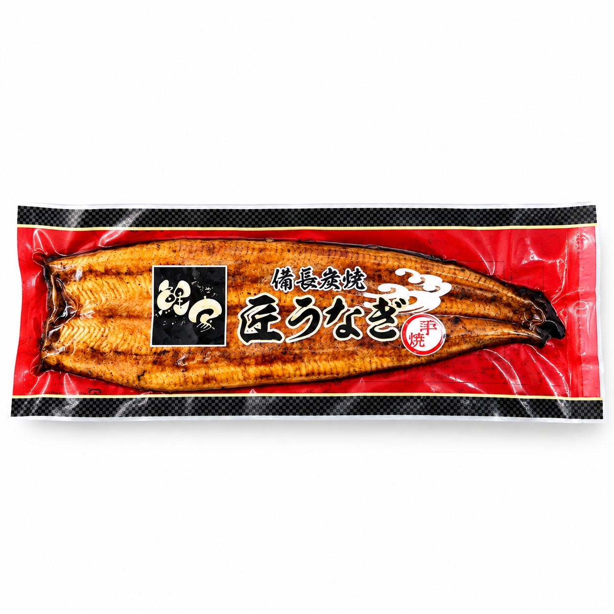

SCENE 01

j 海鮮・魚介類
【備長炭で焼き上げた香ばしさ。九州産うなぎの蒲焼をご家庭で。】
九州産のうなぎを備長炭でじっくりと焼き上げた、無頭タイプの蒲焼です。1パック220g入りで、ご家庭で本格的なうなぎ料理を手軽にお楽しみいただけます。 職人が丁寧に焼き上げたうなぎは、炭火ならではの香ばしい風味が特徴です。醤油、みりん、砂糖、はちみつなどを合わせた特製のタレが、うなぎの旨みを一層引き立てます。頭がないため、調理の手間が少なく、使いやすいのも魅力です。 温めてご飯にのせるだけで豪華なうな丼が完成するほか、刻んで薬味と合わせればひつまぶしとしても美味しくお召し上がりいただけます。おもてなしの一品やお酒のお供にもおすすめです。 商品は冷凍でお届けしますので、ご家庭の冷凍庫で保管してください。賞味期限は発送日から3ヶ月。食べたい時にいつでも本格的なうなぎ蒲焼をお楽しみください。
公式サイトへ移動します。価格・在庫・配送条件は移動先で最終確認してください。

PRODUCT INFORMATION
うなぎ（九州産）、しょうゆ（国内製造）、糖類（砂糖、ぶどう糖果糖液糖）、みりん、酒、はちみつ、うなぎエキス、（一部に小麦・大豆を含む）
FAQ
掲載の商品規格は「220ｇ/ｐ」です。選択できる内容とご注文時の詳細は商品ページでご確認ください。
保存方法は「冷凍」です。賞味期限は「発送日より3ヶ月」です。
MEAT PLUS OFFICIAL SHOP
仕入れ・加工・梱包・発送まで自社で行うMEAT PLUSの公式オンラインショップでご注文いただけます。
公式オンラインショップで購入する備長炭焼 匠九州産うなぎ蒲焼/無頭。商品規格：220ｇ/ｐ。保存方法：冷凍。原産国：日本。製造地：日本。賞味期限：発送日より3ヶ月。
価格・在庫・配送日・送料・ギフト対応は、公式通販の商品ページで最新情報をご確認ください。
もう少し、見てみる？